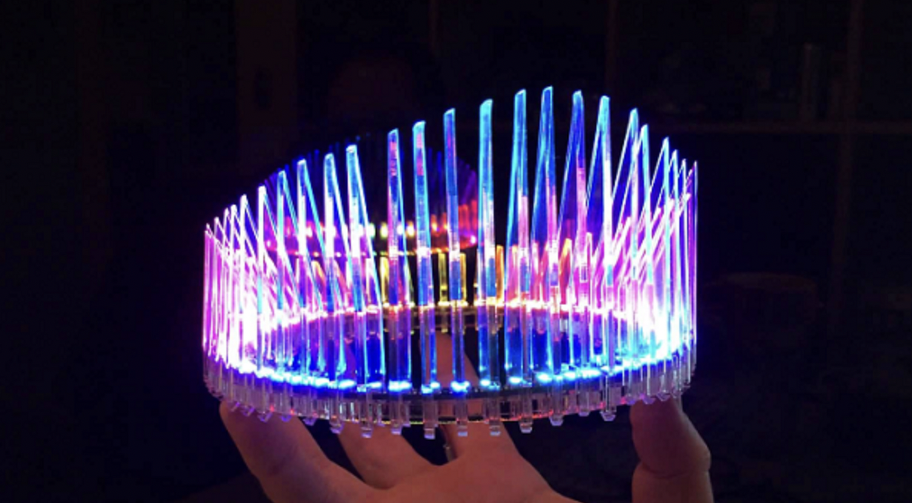
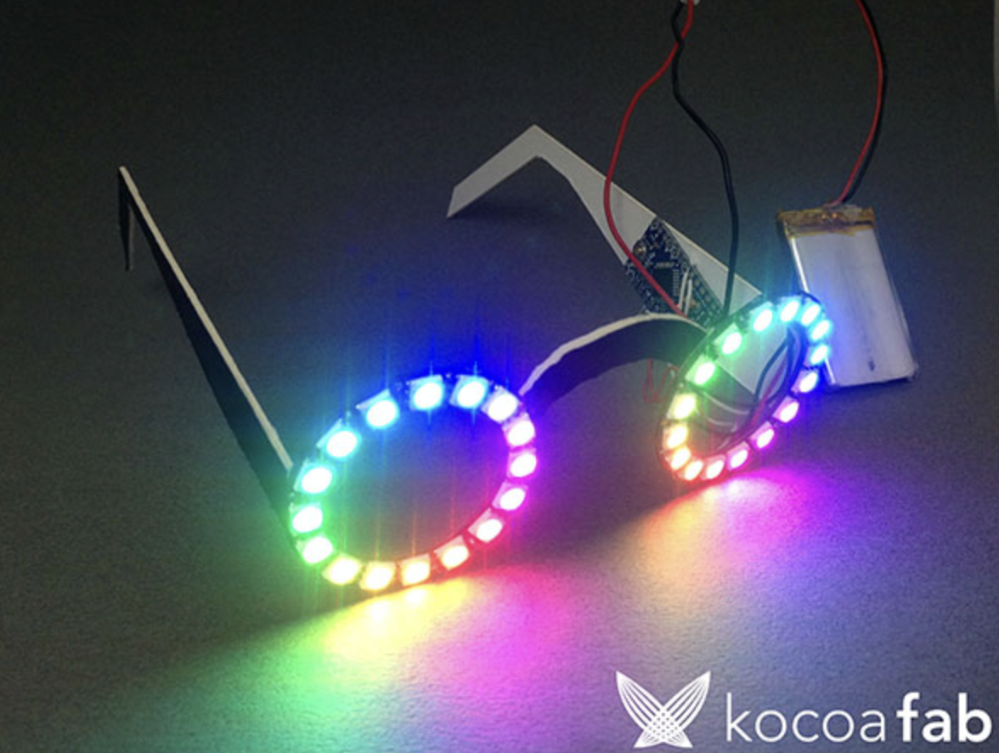

Neo pixelとは
フルカラーのLED。普通のLEDは1個をつけるために1個の電源端子（もしくはピン）が必要。
しかし、Neo pixelは1個でも100個でも電源と制御用ピンだけで、多くのLEDを制御できるように設計されているメリットがある。
Neo pixelの長所
- それぞれのLEDに対する個別制御（色のON、OFF）が可能
- 連結配線が簡単
- どんな形でも、お互いに接続が可能。
Neo pixelの短所
配線
NeoPixelの+5V(赤）ーーー>Arduinoの5V
NeoPixelのDin（黄）ーーー>Arduinoの9番ピン(470Ω程度の抵抗を入れる)
NeoPixelのGND（黒）ーーー>ArduinoのGND
とつなぐ。
Arduinoから電源を取ろうとすると連結は5個が限界。
それ以上にすると、Arduinoが壊れるので、沢山連結する場合は+5V、GNDは外部電源とつなぐ必要がある。
参考
代表的なNeo pixelの作品
写真出典
写真出典